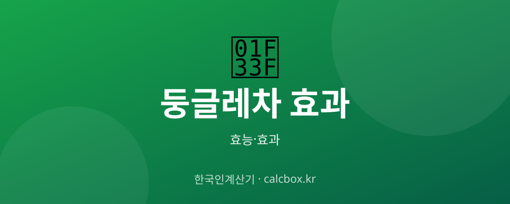

둥글레차 효과 — 구수한 무카페인차의 효능과 마시는 법·주의점
물처럼 마시는 구수한 둥글레차. 카페인 없이 즐길 수 있는 이 차가 어디에 좋은지, 어떻게 우리는지 정리했습니다.

둥글레차 개요 — 어떤 것인가요?
둥글레차는 둥글레 뿌리줄기를 덖어 만든 무카페인 전통차입니다. 구수한 맛으로 물 대신 마시기 좋아 남녀노소에게 사랑받습니다.
둥글레차 주요 효능·효과
- 무카페인 수분 보충 — 카페인이 없어 밤에도 부담 없이 수분을 보충할 수 있습니다.
- 갈증 해소·피로 완화 — 예로부터 기력·피로 관리 목적으로 즐겨 마셨습니다.
- 구수한 풍미 — 특유의 구수함으로 커피 대체 음료로 활용됩니다.
섭취·사용 방법과 권장량
덖은 둥글레 한 스푼을 뜨거운 물에 5분가량 우려 마시거나, 티백을 물병에 넣어 연하게 즐깁니다. 물처럼 자주 마셔도 부담이 적습니다.
주의사항·부작용
대체로 순한 차이지만 혈압·혈당 약을 복용 중이라면 다량 섭취 전 전문가와 상담하는 것이 좋습니다. 특정 체질에서 소화 불편이 있으면 연하게 드세요.
자주 묻는 질문 (FAQ)
Q. 둥글레차는 카페인이 있나요?
둥글레차는 카페인이 없는 무카페인 차입니다. 저녁이나 취침 전에도 부담 없이 마실 수 있습니다.
Q. 둥글레차를 물처럼 매일 마셔도 되나요?
순한 차라 물 대신 즐기기 좋습니다. 다만 지나치게 진하게 다량 섭취하기보다 연하게 마시는 것이 무난합니다.
Q. 둥글레차는 어떻게 우리나요?
덖은 둥글레 한 스푼을 뜨거운 물에 5분 정도 우리면 됩니다. 물병에 티백을 넣어 연하게 우려 마셔도 좋습니다.